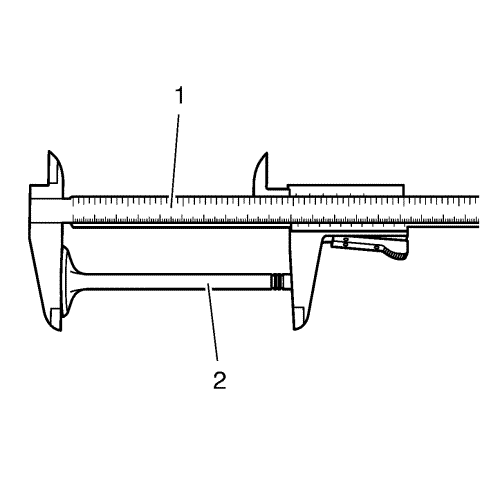
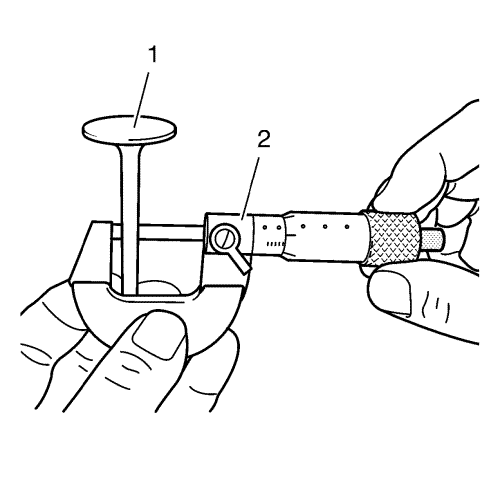
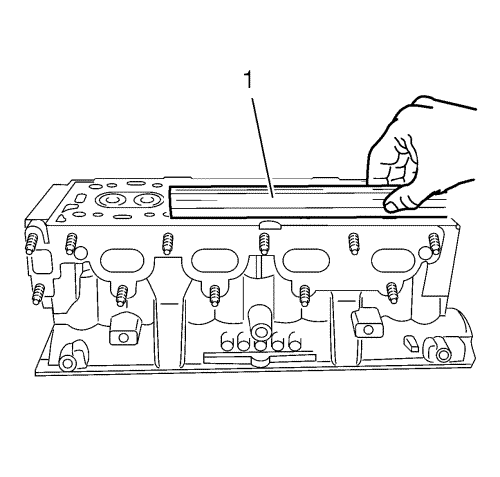
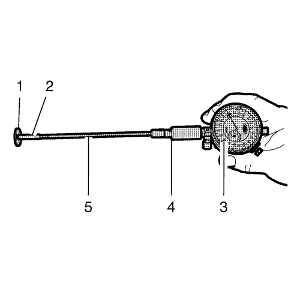
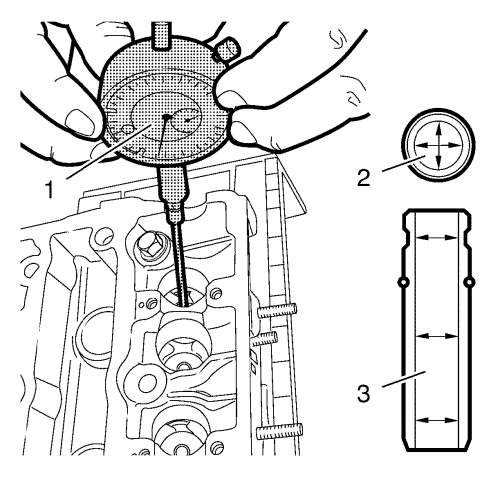

Limpieza y comprobación de la culata
Herramientas especiales
| • | Instrumentos de medición EN-6216-200/300/400 |
Si desea informarse sobre herramientas regionales equivalentes, consulte Herramientas especiales .
Procedimiento de limpieza
- Elimine cualquier resto antiguo de sellador de roscas, material de la junta o sellador.
- Limpie todas las superficies de la culata con sellador no corrosivo.
Advertencia: Consulte Advertencia, protección ocular en la sección Prólogo.
- Sople con aire comprimido todos los conductos de reparto de aceite.
- Quite los depósitos de carbonilla de la cámara de combustión.
Examen visual
- Compruebe los siguientes estados de las superficies de cojinete de árbol de levas de la culata:
| • | Estrías o picado excesivo |
| • | Decoloración por sobrecalentamiento |
| • | Deformación debida a un desgaste excesivo |
| • | Si los muñones de cojinete del árbol de levas están rayados o dañados, debe sustituir la culata. NO rectifique los muñones de cojinete del árbol de levas. |
- Si se produce alguno de los problemas antes citados en las superficies de cojinete de árbol de levas, sustituya la culata.
- Examine la culata en busca de lo siguiente:
| • | Grietas, puntos defectuosos o corrosión en las cámaras de combustión. |
| • | Suciedad en los conductos de aceite. Limpie los conductos hasta eliminar toda la suciedad. |
| • | Fugas de refrigerante o daños en la superficie de sellado de la cara del bloque. Si hay fugas de refrigerante, mida el alabeo de la superficie como se describe en Medición de la culata - Comprobación de la planeidad de la superficie. |
| • | Daños en cualquiera de las superficies de junta. |
| • | Áreas quemadas o erosionadas en la cámara de combustión. |
| • | Grietas en las tubuladuras de escapes y cámaras de combustión. |
| • | Grietas externas en los pasos de agua. |
| • | Obstrucciones en los pasos de admisión o escape. |
| • | Obstrucciones en los pasos del sistema de refrigeración. |
| • | Tapones de panel de radiador oxidados, defectuosos o con fugas. |
- Si la culata está agrietada o dañada, debe sustituirla. No se permite soldar o remendar la culata.
Comprobación y medición de la válvula

- Limpie las válvulas de carbonilla y aceite. La carbonilla puede eliminarse con un cepillo de alambre.
- Revise las válvulas para comprobar lo siguiente:
| 2.1. | Compruebe si las caras de las válvulas presentan quemaduras o grietas (1). Si hay piezas desprendidas, sustituya la válvula y compruebe si hay daños en el pistón correspondiente y en la zona de la culata. |
| 2.2. | Compruebe si la válvula está torcida o deformada (2). Si la válvula está deformada, debe sustituirse. |
| 2.3. | Revise si el vástago de válvula (3) está desgastado. |
| 2.4. | Revise si las ranuras de la chaveta de válvula están desconchadas o desgastadas (5). Sustituya la válvula si está desgastada o desconchada. |

- Mida la longitud de la válvula (2). Utilice un pie de rey (1). Consulte Especificaciones mecánicas del motor para ver los valores permitidos.

- Mida el diámetro del vástago de la válvula. Utilice un micrómetro (2). Consulte Especificaciones mecánicas del motor para ver los valores permitidos. Anote los resultados de la medición.
Medición de la culata

- Compruebe la planeidad de la superficie de sellado de la culata. Utilice un filo recto (1).

- Prepare la galga de espesores de vástagos de válvula para medir la holgura de la guía. Monte la galga de espesores EN-6216 y los instrumentos de medición EN-6216-200/300/400 del siguiente modo:
| 2.1. | Monte la extensión (5) en el soporte (4). |
| 2.2. | Monte el calibrador interior (2) en la extensión (5). |
| 2.3. | Monte el medidor (3) en el soporte (4) y tense a 1 mm (0,0394 pulg.). |
| 2.4. | Monte la arandela de calibración (1) tal y como se muestra para ajustar el medidor. |
| 2.5. | Regule el medidor a 0 mm (0 pulg.) girando el cuadrante. |
| 2.6. | Desmonte con cuidado la arandela de calibración (1). |

- Mida el diámetro interior de la guía de la válvula (2) tal y como se indica en varias zonas (3). Utilice el medidor EN-6216 (1) y los instrumentos de medición. Anote los resultados de la medición. Consulte Especificaciones mecánicas del motor para ver los valores permitidos.
- Reste el diámetro del vástago de la válvula del diámetro interior de la guía de válvula para calcular la holgura entre el vástago y la guía. Consulte Especificaciones mecánicas del motor para ver los valores permitidos.
- Ponga la culata al revés.
| © Copyright Chevrolet. All rights reserved |